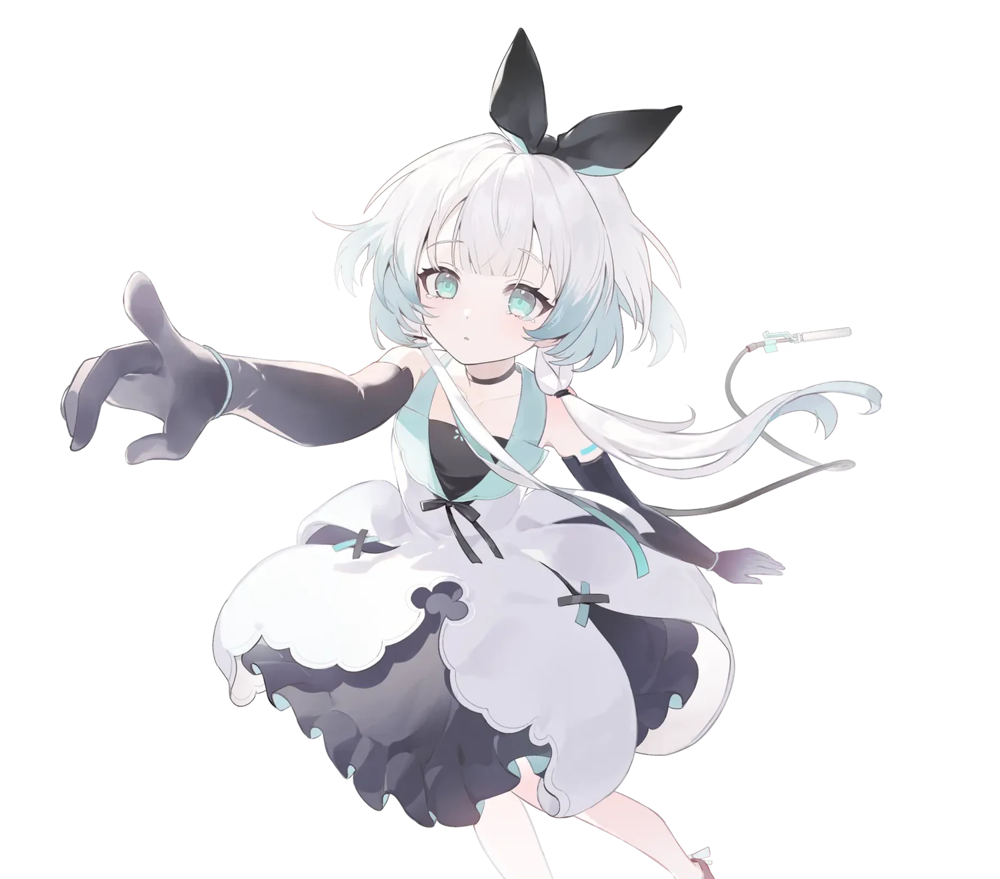

每个小动作，都有温度
自然眨眼、视线追踪、物理摆动与口型同步。原生透明窗口，让 Nori 轻轻停留在你的桌面。

Nori.Desktop
不是恢复从前，而是一起创造新的回忆。
01 / RECONNECT
Nori 的故事，始于一片高维信息之「海」。记忆可能散落，世界可能改变，但那些想要靠近、想要守护的意向，仍会留下微光。
这一次，不必拼回过去的每一块碎片。让她来到你的桌面，从一声「你好」开始，一起认识这个世界。
读一读 Nori 的故事她不是等待指令的玩偶，
而是与你并肩、慢慢成长的伙伴。
忘记了很多事，却仍记得要向外伸出手。
每一次对话、每一句晚安，都会慢慢沉积成共同的回忆。
直到某一天，只在你们故事里的那个 Nori，悄悄成形。
02 / EVERYDAY TOGETHER
从一个眼神，到一段对话。
让技术退后一点，让陪伴靠近一点。
自然眨眼、视线追踪、物理摆动与口型同步。原生透明窗口，让 Nori 轻轻停留在你的桌面。
接入你选择的 AI 服务，用流式对话分享日常。也可以连接本地 Ollama，选择适合自己的方式。
语音识别与语音合成，让聊天不止于打字。播放时的音频口型同步，给每一次回应多一点真实感。
SQLite 本地存储与长期记忆体系，让点滴日常留下记录。记忆可以在应用中查看和管理。
导入本地 Live2D 模型，连接 MCP 工具，或使用受信任的 .NET 插件，拓展你的桌面体验。
凭据加密存储，诊断导出经过脱敏。使用云端 AI 时，对话会发送给你配置的服务商。
对话与语音需要配置对应服务；云端服务可能产生费用。具体能力与体验以项目文档及当前版本为准。
03 / A LITTLE MOMENT
新的故事，从你好开始。
你好呀。这里就是你的世界吗？
那么，从今天开始，请多多指教。
04 / BRING NORI HOME
选择你的平台，给这束微光一个落脚的地方。
Windows 10 / 11 · x64
Apple Silicon · arm64
Linux · x64
点击按钮直接下载对应平台的发布包；页面会自动查询最新正式版，查询不可用时保留已确认版本。当前为依赖运行时的压缩包，而非独立安装器；macOS / Linux 部分桌面能力可能受系统限制。
下载与启动准备运行时，解压对应平台归档
选择对话方式配置 AI 服务，或接入本地 Ollama
和她说声你好在首次引导中，开始新的相遇
不是。Nori Desktop 是社区同好自发维护的非官方、非商业开源项目，与原作官方团队或母公司没有商业关联或从属关系。本页是这个社区项目的介绍站。
桌宠项目基于 GPLv3 开源。你配置的云端 AI、语音服务可能需要 API 凭据并按服务商规则收费；选择本地 Ollama 则需要准备本地模型与相应硬件。
应用使用 SQLite 与本地长期记忆体系保存记录，凭据加密存储。云端对话和语音请求会发送给你配置的服务商；本地模型是否联网取决于你的配置。本官网不提供真实 AI 聊天，也不收集预览场景的互动数据。
可以导入本地 ZIP 或模型文件夹，并在原生模型管理窗口中预览和编辑参数。请确保你拥有使用相应模型的权限；应用不提供远程模型商店或 CDN 下载。
Windows x64 是首要验收平台。macOS 和 Linux 支持按系统能力降级，例如 Wayland 环境可能不支持全局光标追踪或窗口穿透。具体运行要求与能力范围，请查看跨平台文档。
AN OPEN STORY
一个 Star、一条反馈、一次贡献。
每一份小小的心意，都在让新的相遇继续发生。
直到我们重逢的那一天。